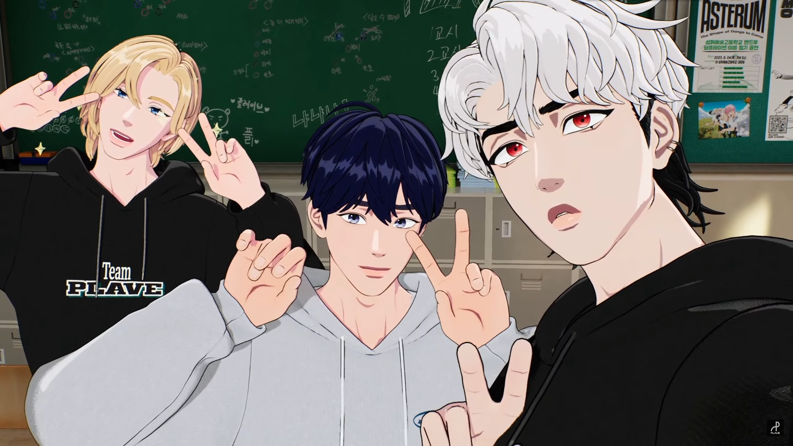
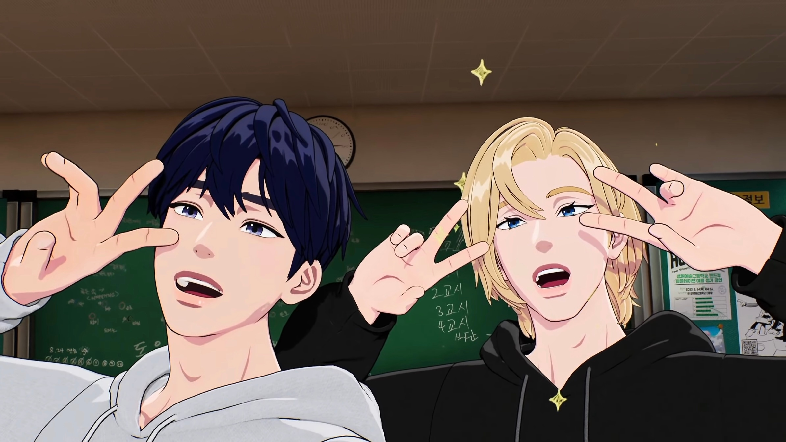

2023
10-22

嗷呜PLAVE居然上了内地的报纸！还是羊城晚报📰~ 🔥🔥🔥
里面有一句话真的很触动我——
”只有爱一个东西你才能延续你的生命，热爱虚拟偶像的你才会爱自己。“
哇真的，在遇见我推之前，尤其是3，4月的时候，那时候临近初会考试，我真的感觉每一天都很痛苦很纠结很矛盾，心理压力很大，极度的内耗甚至开始怀疑自我，讨厌这个世界，讨厌身边的亲人和朋友，觉得一切都是虚无毫无意义……然后现在真的很不一样，感觉好像每天泡在蜜罐里，很开心很满足，感觉世界也没有那么糟糕，想要一直和PLAVE走下去，热烈的活下去。
真幸运，能在4月的那一天与你们相遇并且爱上你们😢❤
10-20
因为今天晚上有课，然后错过了直播ㅠㅠ 不过回寝室立马看了超话和up们的切片，吃的很饱~
河玟加入斑line的新特效“01开花”！然后是银虎看斑比的直拍的锐评反击时刻😆看这小子挑刺的样子 【PLAVE】银虎的反击 reaction锐评斑比丨看这小子挑刺的样子丨《六夏》《Siren》《Love Lee》reaction斑比部分｜纯正43味_哔哩哔哩_bilibili 还有网购零食，嗯嗯…应该可以看做是猫猫狗狗在网购自己的猫粮和狗粮吧~然后就是河玟舞蹈老师的授课时间，虎子今天学了三首歌哈哈哈哈 PLAVE银虎&河玟直播在线教学如何翻跳教学RIIZE《Siren+Get A Guitar》 然后还有Rap和清唱Loving You Girl（超爱！）【PLAVE】RAPline的生唱实力是？？！|《RINDAMAN》&《loving you girl》_
最后的截图时间，竖屏的虎子真的好帅啊！❤🔥PLAVE切片中字｜来自竖屏虎的冲击…有点承受不住了σ(^_^;) @231020
10-19
今天re了六夏的练习室，又是虎子被审判的一天，虎子の疯狂星期四~
然后又是《马里奥派对》游戏！原本游戏一开始，斑比一直运气很差，连AI都拿到星星了，斑比还没有星星，而且还穷没有金币kkk😂有点让人怜爱了ww然后中间还碰上了和河玟的对决，赌徒斑比把自己全部的金币都押上了可还行，最后惨败痛失所有家产kk PLAVE切片中字｜人不要轻易赌博…蔡斑比血泪教训 @231019 这告诉我们一个道理：不要做亡命的赌徒！然后在玩游戏的时候，河玟时不时声带模仿，可爱的~什么时候也给我们的声带模仿天才小猫做个语音包！
上次的赢家是艺俊，结果这次的赢家是斑比哈哈哈哈~所以，人生就像是这马里奥派对，总是起起落落落落落落起起落落落起的😆艺俊惨败，河玟不得不来一周的斑line，真是输了游戏也赔了猫啊哈哈哈哈笑死，最后艺俊倒在地上撕心裂肺的嘶吼一边吐泡泡好搞笑🤣 【PLAVE切片中字】恭喜斑line新成员+1
10-17
[韩联社]
此前，在上个月23号，虚拟偶像 Plave也参与了在首尔麻浦区世界杯竞技场举办的MBC Idol Radio演唱会。
五人组合Plave在大型电子屏幕上进行了精彩的表演，获得了来自粉丝们解渴般的热烈应援。
这天的公演虽然不是plave的单独演唱会，但也有近5000名Plli来到现场。
制作了plave的虚拟企划专门公司vlast正在为明年能召开单独演唱会而准备中。
https://weibo.com/7874735016/Noe6efTeu
这么快就要开单独演唱会了啊ㅠㅠ
但是我现在还只是个贫穷的大学生，要努力赚钱了！💸💸💸
据说最近中韩签证还比以前更简便了，以及在校大学生独有的签证程序便捷！看来这一切都是命运的安排，看来这韩国我是不得不去了，冲冲冲~ 攻略在此！
10-14

啊啊啊啊双厨的狂喜时刻！虽然早就知道在KCON，PLAVE和XG的展台是靠在一起的，但是看到还是会很激动~
尤其是这同框的几秒，还是小纯！小纯是我在XG里最喜欢的Vocal，在XG的歌里简直就是水印一般的存在，真.双厨狂喜~
10-13

一开始的直播很像在山洞里，所以差不多花了15分钟的时间换了旧的麦克风。然后是固定的闲聊环节“今天吃了啥”~聊了很久，PLAVE对吃的是认真的！
然后是斑line的正式宣布仪式！讲堂上面的幕帘也特地换成了斑比的头像！还有斑比也戴上了小蝴蝶头饰和彩带限时返场😂真的一眼看过去“哪里来的漂亮小姑娘呀”~👧然后斑比还帅气地跳了Siren和PTTR，难道这就是加入斑line的福利吗？我立马申请加入！🙋♀️ PLAVE切片中字｜斑line祝贺公演｜特邀嘉宾斑比SIREN&DEVIL挑战现场版 @231013
然后谈到银虎加入斑line的时候，感觉好不容易关上的柜门又被狠狠推开了…什么“两个人有种分不开彼此的感觉”、“有点是装着很讨厌，其实特别喜欢”，还得是4399超话的主持人南艺俊，带头给我们嗑糖！尤其是诺亚说的“两个人开出了爱情的花”最惊为天人…😦 老夫老妻在线磕43/强烈的否定就是强烈的肯定/斑比银虎的爱情开花了?231013PLAVE直播 艺俊 诺亚 斑比_
然后是游戏回！这次玩的游戏是《马里奥派对》~也可以叫《虚拟男团大战AI》，真的一波三折，反转反转再反转，在现场真的要笑死我了🤣结果万万没想到最后的赢家是艺俊kkk顺便一提，玩游戏时候的诺亚真的好娇啊，感觉一直在撒娇，真的好可爱💜 PLAVE切片中字｜直击最后翻盘现场!!｜充满gas的感言环节 @231013
10-12

To. 致世界上最珍贵的噗哩🎁
希望能给世上最珍贵的噗哩带来小小的安慰
今天一天也辛苦了 我爱你们
（我无论何时都站在你这一边）
——
诺亚这首Cover重录了十遍，是诺.完美主义.亚！深夜送给PLLI们的礼物~🎁
听着诺亚感性的歌声，再看这首歌的歌词，真的感到心有被狠狠戳中😢这说的不就是现在的我吗？内心对未来的不确信、惶恐不安，家人们、朋友们期盼的目光紧紧注视着我，让我感到不安，以至于想要远离，就连曾意气风发的梦想也感到难以实现，一切都好像变得虚无、毫无意义…😢
这首歌好像在唱诺亚自己的过往，也在唱我们
其实我们大部分人的青春期，并不像电视剧里演的那样绚烂多彩
反而总是充斥着迷茫、青涩和离别，或孤独或痛苦或害怕或自我怀疑
但时间总是能慢慢抚平伤口和缺口
“也许我能找到自己” 总是这样确信着，最终走到这里
真的很感谢你能一直坚持梦想，来到我的面前
真的很想一直听你们唱下去啊，如果这个世界永远没有离别就好了…
10-10
斑比的灰色卫衣装首次亮相，以及久违的43合播！三个人坐在一起特别像奥利奥，而且是草莓夹心的奥利奥！
然后今天的主题是“不说英语大挑战”！因为韩文里有很多舶来词，昨天也是韩国那边的韩文节，这次的豆丝专门准备了新特效，当三人说到英语的时候，就会被突然出现的韩语字母砸头哈哈，豆丝做的莫名很有打击感，感觉还真有点头疼（？不过越到后面三个人硬是玩成了躲避球游戏😂 700！【PLAVE】有人在躲 有人在用头接
还有绕口令和你划我猜俗语环节！再次感叹虎子不愧是Rapper，读绕口令真的一口气贼长贼快！然后你划我猜就有点加密通话了，某只雄鹿又开始发出奇怪的动静了kkk还有一个猜流行语环节（斑比最爱的考试环节XD）满屏幕的韩文俺实在看不懂，甚至有点想睡觉💤只能坐等烤肉太太们的熟肉了…最后斑比30分，虎子70分，这也能互补，可又被我磕到了🙋♀️
最后揭晓最终结果的时候，先宣布了韩文王是虎子，虎子发表了一番获奖感言后，戴上了可爱的小皇冠👑然后接着宣布韩文破坏王，没想到结果又是虎子，于是刚戴了没多久的皇冠就没了哈哈哈哈🤣今天的特效真的700！豆丝加鸡腿~
10-05

今晚是制作人z~直播在线制作logo song，不愧是制作人line~尤其是虎子的绝对音感！😉
不得不提的是，今晚的直播肉眼可见的来了很多新PLLI，弹幕跳得好快，根本看不过来，看来冰火歌会还是起到了一些作用hhh
然后有一个点超好笑，就是艺俊说自己订阅了其他成员的泡泡，然后吐槽说成员的泡泡经常发“亲爱的”、“我爱你”等等这些腻歪的情话hhh
真是五十俊笑百步虎哈哈哈，明明艺俊在泡泡也经常这样😂只能说你们三媚粉程度真是不相上下
10-04

今晚是PLAVE首次参加冰火歌会的舞台放送！PLLI们真的好热情，一直在弹幕应援还有刷礼物sc，甚至还有富婆姐姐刷了三艘宇宙大飞船，排面有了hhh
场景的建模也很用心，看起来很高级，五个人的生唱也是很真实很好听kkk不得不再感叹一句：面捕真的太厉害了！今直充啊今直充
中文自我介绍环节也很有趣！艺俊和河玟的中文听起来很标准，然后诺亚斑比虎子的听起来像是烤羊肉串的dbq😂
而且真的难以想象在限韩令下，很少有韩团可以像PLAVE一样在中国大陆有这么多的活动，又是CICF漫展，又是冰火歌会的，难道因为虚拟偶像的特质吗？
10-03

韩诺亚
小时候听别人介绍说有位歌唱得很好的朋友。 初次见面虽然有点尴尬，但因为”歌”这个共同点，当天就变亲近了！ 之后没过多久，我被诺亚邀请到他非常小的练歌室兼工作室。 我们各自分享最近在练习的歌曲和正在创作的音乐，就变得更加亲近了。 其实我也没有太多朋友，能够认识有共同话题的朋友觉得非常高兴。 之后有了参加Vlast选秀的机会，作为第一个练习生进入了公司，在独自练习的途中觉得.. 觉得如果和诺亚组团，应该能幸福地唱歌吧。 所以就这样kk 问了想不想一起。 我也不太清楚那家伙当时是以什麽样的心情决定加入的,,hh 感谢他只是因为相信我就和我一起，我也很依赖他。 大概就是命运吧💜💙
蔡丰玖
回想起第一次见到斑比的那天。在公司会议室第一次和斑比见面的那天，互相向对方尴尬地打招呼，听到以”成员”来做介绍的瞬间，心情很微妙hh 我记得当时只是简单地问了一下吃饭了吗，隔着银虎懵懂地观察著周边的人的视线！（旁边的诺亚也一样kk）和代表聊天后，在公司电梯前问了电话号码。 当时我把他的名字保存为”蔡斑比nim”，银虎把我们加到聊天群群了！ 因为我和斑比不是说平语，所以用了很长时间像”斑比nim”或”斑比先生”这样的尊称kkk 啊，还有被斑比感动的回忆。 在还有一名成员空缺的时候（在见到河玟之前），为了选择最后一名成员，我们见了很多其他的外星人。 当时斑比和我和诺亚还是很尴尬的，但是外星人会议的时候一定不会缺席。 即使是在还没完备的状态，在乱七八糟的位置上，他用那炯炯有神的眼睛，总是主动参与的样子，真的让我很感激… 让我产生了”作为成员团结一致原来是这样的心情啊”这种想法。现在我是斑比的别名制造担当💗💙
都银虎
我记得是在寒冷的冬天第一次见到银虎。 第一次见到银虎的时候感受只有一个，感觉很端正和有礼貌啊~hh 事实上我在人生中没有听过”大哥！”这种称呼的，银虎从第一次见面开始就一直”艺俊大哥！ “这样称呼我。 很可爱吧？kk 所以我也像大哥一样！ 想多照顾他，想多向他问好。 记得我们小时候相遇后，心裡都想给对方送点什麽，然后互相送了杯面套餐礼券hh（现在能够给银虎买更好吃的东西，觉得很幸福hh）第一次见面的那天，银虎给我听了一首他的自作曲，嗯…怎么说呢。我只能发出呜哇.. 这样的声音。 首先想到的是，啊，如果和他变亲近的话，在音乐方面应该会有很多值得我学习的地方。 从那时候开始我就变得有点缠人了kk 但银虎他也不讨厌，关系变得更亲近了。就这样，去年猛地！和他提出了加入PLAVE的提议hh 记得当时我在电话里小心翼翼地问了，当时银虎也是”大哥~大哥这样的话..当然要加入了！” 这样回答我了。对我来说银虎的存在是福星啊福星❤💙，现在也从银虎那里学习了很多😊
柳河玟
河玟真的很珍贵。在威廉代表和成员们全部在场的场合第一次见到了河玟。 对河玟的初印象就是”微妙”。 可能是因为全部成员都在场，所以才形成了那种微妙的氛围，但抛开那种氛围不说，河玟这个人本身,,hh该怎麽说呢。 黑色的头髮从外形上感受到相当大的气场？有种好像得通过威廉代表才能跟他传话的感觉。 全部人第一次一起吃饭的时候，就,,真的只吃了饭！kk 吃完饭大家分别的时候，因为我偶然和河玟的路线有重叠，聊了五分钟左右。 我还记得当时说的话，他说对舞蹈和身体真的很有自信，如果大家能相信并交付给他那就好了。 但，他这话的语气是，啊，原来这位叫河玟的朋友并不是木讷和阴沉的人啊。 我立刻想到如果变得亲近的话，还有河玟如果真的加入了我们团队的话，他应该会成为成员中最热情的人吧。
如果再说一下遇见河玟之前的故事的话，我们成员们和公司都觉得一定需要河玟。 我们都清楚4个人的PLAVE无论从实力还是团队的气氛上都无法做到完美。 听说河玟收到加入PLAVE的提议后苦恼了很久，但我们觉得不能错过！ 不知道诺亚作为代表给河玟打了几周的电话hh，经过努力不懈的说服，我们终于被河玟选中了，现在和忙内on top的河玟组成了yeline!🐈⬛🐬
河玟的妈妈爸爸！ 感谢把我们河玟养育得这麽帅气！ 希望下次还有机会给您们打电话。 祝您们永远健康！ 南艺俊上🖤💙
————
是艺俊在泡泡写的对四位成员的初印象！真的是很真诚很可爱的五人😢
对我来说，PLAVE五人之中谁都是无法被替代的，都是独一无二的存在
今年最幸运的事情，莫过于能够遇见PLAVE😭PLAVE&PLLI以后也要一直走下去！
09-30

今天是PLAVE在CICF漫展的第一天！虽然我没去，但是在超话看到了好多姐妹的前线实时报导和直播！而且这次来展台的PLLI们排队甚至都排到了大门口，真是恐怖如斯的人气,,,原本我一直知道他们在韩国很火，原来在国内也很🔥的吗？！
话说有看到姐妹发了plave展台上展示的一个全息直拍小盒子！【PLAVE】CICF现场3D全息直拍！？那我Dream一个全息技术的演唱会不过分吧~
CICF的特别舞台，PLAVE还准备了一小段的中文歌翻唱《月亮代表我的心》&《甜蜜蜜》！虽然是老歌，但是唱得也很好听很喜欢，能看得出很用心~😊还有《I just love ya》的舞台，不得不说PLLI们的应援真的超给力！还准备了很多超好看的无料ww PLAVE CICF×AGF漫展 特别舞台
然后在10.2日的时候，威廉也来了展台现场亲自发小礼物！！！越看越后悔自己没去，下次一定！
（话说为什么PLAVE和FF14的展台只有两步的距离啊！？上次KCON也是，PLAVE和XG的展台也是靠在一起…只能说我最近还在关注的游戏就只剩下FF14了，女团里也只关注XG…所以这到底是什么缘分,,,）
09-25
今天是中秋🌕特辑！也是首次五人一起下乡~（你别说这花裤子看多了还挺顺眼了…）
本放最大的亮点莫过于掰大腿环节！我宣布，忙内nim是全场总攻，真正的矿工！不愧是跆拳道黑带选手，腿部力量真的强悍！ 南村群童欺我老无力/15体力差/摔跤游戏对决 230925PLAVE五人直播 上次下乡吃西瓜，这次中秋吃松糕~有豆子松糕和芝麻松糕，斑比两次都吃到不喜欢的豆子松糕，笑死我了😂然后还有变声KTV环节，再次感叹虎子不愧是绝对音感，变音了立马能把音准给找回来kkk最后的许愿环节，夜空出现了超大月亮，道理我都懂，但是为什么月亮会这么大呢！？🤨
然后这次直播意外多了好多穿模的地方，好久不见了属于是😂只见蔡师傅又开始使出他的独门蔡式正骨法，开始各种暴力修复XD 正好前几天乐童音乐家的妹妹在直播还提到了“最近不穿模了好可惜”🤣话说原来妹妹你也看PLAVE！蹭了个大雾、双厨的狂喜~那就再放一个艺俊Cover乐童的新歌《Love Lee》~🎶 PLAVE翻唱｜南艺俊 - Love Lee (原唱:乐童音乐家AKMU) ｜太好听了太好听了太好听了TT 穿模封面是豆丝做的，斑比含量超标😂诺亚对此Cover的评价：艺俊的声音像宝矿力那样清澈。俺也十分觉得~！
【PLAVE直播回放全场熟肉】230925 中秋特辑 | 爱豆拉演唱会感想 | 芝麻派vs豆派 你是哪派? | 31种冰淇淋喜好大公开
09-23

不愧是MBC亲爹！仅出道七个月就能和前辈们一起上拼盘演唱会了！！🥳🥳
虽然是拼盘演唱会，但是感觉80%的观众都是来看PLAVE的PLLIs，观众席一度被白色ppT恤统治，还以为是VLAST公司来团建的，切实感受到了韩🔥😂PLLI们的应援真的超给力！现场的氛围真的好好！
而且从远处看去，真的感觉他们五人就在现场一样！开场intro也很帅~真希望有生之年我也能去一次PLAVE的线下演唱会啊ww看来要努力赚钱才行了，Fighting！！💸💸
09-21

本来今晚的直播是斑比和诺亚，但是由于斑比洗冷水澡感冒了，虽然无大碍，但是考虑到23号还有演唱会，所以当天临时改成艺俊和诺亚了，让斑比回家好好休息…（你们韩国人平常喝冰水、熬夜到凌晨、咖啡当水喝就算了，连洗澡都要洗冷水澡的嘛！！？一时不知该如何吐槽…）
然后在做六夏的应援法演示的时候，豆丝误放了六夏的导唱版本哈哈哈哈，Demo版本就这样泄露了出去，艺俊后知后觉，诺亚完全没发现🤣豆丝今晚加鸡腿！导唱版是制作人line的演唱版本，难得听了一把虎子唱六夏的Rap部分~ 【PLAVE切片/中字放大表情版💙💜】230921 艺俊 诺亚 第六个夏天应援法 ft.吓坏的豆丝 Demo版本泄露+录音小花絮之银虎太厉害/外星语版本公开
今晚玩了画风很可爱的双人小游戏《面包与年糕》，好久不见的游戏回！两支小企鹅尊嘟很可爱，尤其是收绳甩绳的时候~后面因为卡关了好久，豆丝实在看不下去，于是帮忙加上了外挂“无限跳跃”，直接一飞冲天直冲云霄山顶，真的又可爱又爆笑！🤣🤣 【PLAVE短切】卡關了嗎？沒關係企鵝本來就會飛
09-19
今晚的直播有个中国PLLI好有sense！在B站直播间用韩语问虎子“墙、眼睛、膝盖”的英文是什么，艺俊和虎子马上反应过来了，说了好多“我爱你”！感谢这位发sc的姐妹，吃得很饱~😇
然后因为好久没见虎子，所以大家都要求虎子来一个可爱的撒娇😂虎子刚开始有点为难，但还是按照PLLI的愿望照做了ww真的超可爱的！🥰 【PLAVE切片中字】撒娇大师的现场教学 情话大师见习中 其间有小猫逃课 以及小狗总以为自己是狼🐺怎么办？在线等挺急的！【PLAVE切片中字】狗狗总觉得自己是狼怎么办
今晚还有游戏回！游戏名叫《Gang Beasts》，这次虎子终于不是游戏黑洞了kkk有个关卡艺俊还被海里的鲨鱼亲故叼走了，艺俊大叫“我是海豚啊！”🤣然后很多局都是一边艺俊和虎子对打，河玟在旁边悠闲的玩，然后要么是艺俊和虎子一起被车创飞，要么就是自投罗网掉河里，然后小猫直接躺赢哈哈哈哈，还有艺俊从章鱼手里起死回生也很搞笑😂 【中字】和平生活中的PLAVE 🕊︎ 由《萌萌小人大乱斗》解除封印？🎮 🔓｜PLAVE Highlight
最后是KTV回，连唱了六首歌~🎙最喜欢的是虎子唱的《Off my face》，甜甜的虎虎~❤ PLAVE切片中字｜Off My Face - 银虎cover｜害羞小狗唱后感有 @230919
09-14
今晚的PPL金主是TOSS，似乎是搞金融的，然后就有了金融相关的考试环节，叫《生活与经济》模拟考试😂诺亚和河玟都是有备而来，只有斑比是直接裸考来的，不愧是咱INFP人~（话说为什么这考试还要填自己的MBTI？还以为题目会和MBTI有关系，结果发现根本没关系，你们韩国人真的…）
模拟考试结束之后，斑比好不容易终于松了一口气，结果还有考试，这次是ASTERUM模拟考试🤣 豆丝们出的题都很有sense，比如“选出诺亚的羊驼的的所有能力”、“出道曲Wait for you歌词中等待着你一共出现几次”和成员名台词填空…笑死我惹🤣 【PLAVE切片中字】成员也不会的Asterum模拟考｜只有斑比受伤的世界｜论诺亚的羊驼有多少能力｜河玟加入PLAVE最棒的一点是？ 还有超可爱的斑比开花~！PLAVE 中字切片|柳河玟：被斑比哥圈粉是一件很正常的事情|230914noah&bamby&hamin合播🌸🌸
还有最后的KTV回！最喜欢的是诺亚的《Love always run away》Love Always Run Away - 诺亚 🎶然后今晚最惊艳的是斑比的超帅RAP！我先感叹一句六边形战士！🎙︎PLAVE切片｜诺斑哈暴风RAP组 《当当当》｜蔡斑比RAP惹！！！ @230914
09-16
For Bamby：
首先，很感谢你们能来到中国，也很感谢你们能在哔哩哔哩同步直播！你们的每一场直播我都有看，最近我也在自学韩语，希望以后看你们的直播可以不再依赖不靠谱的机翻kkkkk
也许是因为我和你的MBTI一样，初次看你们直播的时候，五人里我第一眼喜欢上的人就是你。你是那样的与众不同，可爱美丽的外表下是有趣且自由的灵魂。但是，我知道这个人格类型有时精神内耗会很严重，希望只是我多虑，希望你没有这样的困扰，真心的希望你能快乐，一直做自由奔跑的小鹿，尽情地做你热爱的事，PLLI会一直支持你们，爱着你们，陪伴你们走下去。自从与你相遇之后，不知不觉间，粉色已然成为我最喜欢的颜色，最常喝的奶茶是蜜桃四季春，最喜欢的水果是甜甜的水蜜桃~
虽然是虚拟偶像，但在我的心里，你们的存在比任何人都要真实。我很喜欢Ditto这首歌，不知你是否同感，感觉我就像MV里拿着摄像机的女孩，你们在镜头的那边自由的舞蹈，我们是无话不谈的密友，喜欢你们的这份心情也在不觉间春去秋来。即使有时会有不友好的视线，即使现实是孤独一人，但因为你们的陪伴我从未感到孤独和悲伤。在中国有一句话叫“陪伴是最长情的告白”，PLAVE和PLLI在一起的这个瞬间，对我而言就是永恒。或许终有一天我们会各自离去，回归彼此的现实，但录像带里保存着的我们曾一同走过的回忆，永远不会褪色和消失。
在遇见你们之前，我一直觉得我的世界只不过是每天重复着同样的轨迹，曾经热爱的梦想也失去了信心和动力，身边的人都仿佛无法理解我的内心，我只能把自己的心封闭起来，才不会受到伤害，但也因此失去了对生活的热爱和期待。但自从遇见你们之后，你们的音乐和声音总能治愈我的心，现在的我即使遇到再大的困难也能勇敢面对、一笑而过，因为我知道有你们在我身边，总是带给我力量和温暖，让我觉得这个世界也不是那么糟糕。在这段时间里，我结识了很多志同道合的PLLI，认识了许多新的朋友，我的世界从此变得多彩了起来，不再是孤独单调的灰色。
真心地感谢你能成为PLAVE，出现在我有限的生命里，带给我无限的幸福和快乐，我永远爱你们！
——————
For Eunho：
首先，真的很感谢你们能来到中国，也很感谢你们能在哔哩哔哩同步直播！我们能感受到你们和VLAST对中国PLLI的用心和尊重，衷心地感谢和爱你们！
我一直都有在关注女团和男团，但是你们在我的心里是第一位。我曾经也在问自己，为什么茫茫人海中，我唯独这么喜欢你们呢？不仅仅是因为你们的音乐和实力打动了我，还有你们五人独一无二的个性，以及你们对粉丝的真诚！在中国有一句话叫“真诚是永远的必杀技”，感谢你们在DaumCafe写下的对PLLI的信，时常让我感到温暖和开心，不再感到孤独和悲伤。
我很喜欢你的Rap和Vocal，真的很帅气很好听！我也很喜欢你的Dance，这次回归有了很大的进步！尤其是你跳舞时那不畏挑战的自信，真的很吸引人，就像Bamby说的那样，有一种只能看见你的神奇魔力~我会关注你的泡泡的，因为希望每天都能和你说早安和晚安！
我一直记得在你生日的那天，你说在虚拟偶像的特殊环境下会有不好的声音，希望PLLI不要伤心，Yejun和Hamin也曾这么说。但是我想说的是，不用担心我们，因为有你们的陪伴，我们每天都很幸福！相反，我更担心的是你们，希望你们不要被不好的声音影响，不要因此伤心或生气，不要忘记PLLI永远在你们的身边，永远支持你们，永远爱着你们，正如你们为我们所做的那样。
感谢你能成为PLAVE，出现在我的生命里，带给我无限的快乐和幸福，我永远爱你们。
最近我也在自学韩语，希望以后看你们的直播可以不再依赖不靠谱的机翻。
为了你们，我一定会努力学好韩语的！Fighting~
——————
是CICF漫展写给斑比和虎子的手写信！本来想五人都写一封，但是奈何人工翻译太贵，100字5元😢写给斑比的信，不知不觉就写到了八百字呜呜，最后斑比的信¥39，虎子的信¥29。看来要开始学韩语了呢，争取以后不让外人赚这份钱hhh
然后在写信的时候，第一次写大长篇韩语的感觉真的很微妙，是一种很新奇的体验呢！第一次写感觉自己写韩语的字好丑啊，感觉和幼儿院的小朋友写的字一样啊呜，自己都有点不忍直视ww不过越到后面写得多了之后，就感觉适应很多了😂为了写信，我花了好多时间挑选好看的信封和信纸，还定制了可爱的动物贴纸~尊嘟下了血本了这回，不过是一场很新奇的体验，希望下次还能给你们写信！
09-12
今天是艺俊的生日！豆丝这次的蛋糕🎂做的也很好看，场景也做的很梦幻，还给艺俊准备了公主套装😂甚至有姐妹在淘宝上找到了一模一样的kkk豆丝们真的很有sense PLAVE 中字切片|普雷五有自己的女神降临|230912yejun生日单人直播 手持仙女棒、头戴公主皇冠，是海豚公主呀~是的没错，我们PLAVE有自己的公主！👸🏻
然后今晚也直播翻唱了我最喜欢的《乱春》和《Summer》PLAVE切片｜南艺俊 - 乱春｜是我最爱的最爱的最爱的乱春TT @230912 / 230912 Summer(原唱 :Paul Blanco) Cover by 艺俊🎂_当初就是因为听了艺俊翻唱的乱春，然后入的PLAVE的深坑，我真的超爱啊谁懂！😭😭 还翻唱了一首也很喜欢 PLAVE中字- 跟蹤狂(STALKER) Covered by Yejun这首是艺俊早在出道前的初直播里翻唱过的，如今离初直播也几乎满一年了，艺俊的歌声依旧清澈明亮和温柔，如今再次回看初直播莫名有些泪目😢 10CM - Stalker
然后今晚斑比、银虎、河玟和诺亚都打来了电话！📞尤其要说的是最后压轴的诺亚，一开口就整活装诺亚的爷爷可还行，笑死😂然后艺俊问诺亚要送什么生日礼物，弹幕的大家好有sense，什么送健身卡送蓝莓鸡胸肉奶昔的都有哈哈哈哈，然后诺亚清唱了一段生日歌，甜甜的~不愧是我嗑的椰奶🙋♀️ 然后还有河玟，还专门写了信给艺俊，署名是“PLAVE艺俊的粉丝河玟” 听完信的艺俊和河玟都有点哽咽😢大家都是很真诚的孩子…【PLAVE切片中字】让艺俊爆哭的生日电话｜来自河玟最真挚的信｜要买劳力士的FLEX诺亚｜斑比前辈的暖心经验谈｜今天银虎是100%的艺Line
最后艺俊还写了一封信给PLLI ✉😢 【PLAVE切片/中字💙】230912 艺俊 生日直播🎂 给噗哩们的信｜每天都很幸福的海豚🐬 约定要报答噗哩们珍贵的爱 感谢你能称为PLAVE，感谢能够与你们相遇，感谢你们给予的真诚和爱，总是带给我快乐和温暖，要平噗啊💙
09-10

09-08

久违的五人合播！解锁新地图：学校讲堂🙋♀
然后是PLAVE的第一个PPL，感谢金主的衣服！这套衣服真的好看，尤其是斑比的那一套粉色的，很适合斑比，看过去就像是嫩嫩的水蜜桃~🍑直播还没过一会儿，卖衣服的网站就崩了哈哈哈，甚至直播结束后衣服都已经售完了，不愧是噗哩姐们，韩火很安心🔥😇
然后是跳高吃星星~斑比由于身高，一直只能吃三颗星星kkk但是斑比偏偏不服，总是要上前挑战，最终吃下第四颗星！太可爱了呜呜ww🥰 又被身高欺负了的可怜小粉红 都是游戏的错 230908 五人直播切片cut_ 第二个游戏是抖便利贴游戏，这个游戏也好有趣，有亿点好奇Vlast是用什么技术做到让便利贴随身体抖动掉落的🤔这环节艺俊是唯一把身上所有便利贴掉落的，不愧是海豚nim🐬~印象深刻的还有斑比的阴暗爬行、诺亚那犹如白色羊驼一般的舞动🤣
然后是舞蹈评价考试~五人轮流上阵，这次的舞蹈评价老师也是PPL的老板，听说也是很南韩很厉害的编舞家和舞者，给很多有名的组合做过编舞！最喜欢的是斑比翻跳的Smoke，粉粉的凶凶的~💗 【PLAVE/直播切片】蔡丰玖-《Smoke》翻跳直拍 纯享版
最后是拳头在哭泣环节！先是河玟叫出了艺俊，然后是斑比和银虎。河玟叫出的是艺俊有点意外，然后斑比和银虎完全不意外😂
09-07

庆祝官咖会员数突破5万！🥳🥳五万公约的五人翻唱在线等~！
然后是熟悉的re环节，只见诺亚再次上演神之截图，给噗哩们又增加了好多表情包，快说谢谢诺亚！然后还讲了很多练习幕后的故事~最好品的还得是这一段，是谁又磕到了？🙋♀ plave｜和我一样没看懂这个视频的建议一起再研读1551遍_
最后河玟还教了诺亚跳最近很火的《Smoke》，诺亚学舞还是很快的，毕竟队内舞蹈断层第三kkk
【PLAVE直播全场中字熟肉】Noah&Hamin 美食世界杯合得来or合不来？& 哥忙z的Smoke challenge！
08-31
前几天的签售里，有噗哩让银虎和河玟做“拒绝告白”的表演kk然后在河玟的提议下，诺亚和艺俊也做了这个表演，艺俊和诺亚的装腔真的很搞笑😂 【PLAVE切片中字】拒绝告白演技
中间recation了六夏的特别影片，这时我才发现原来虎子才是真正的团欺哈哈哈，不过我也很好奇，虎子到底是怎么做到二郎腿这么笔直的？真的不会坐着腰很痛吗🤣最后是倍速舞蹈挑战，河玟不愧是舞担轻松应对，然后艺俊和诺亚就有点不知道在忙什么的感觉😂
【PLAVE直播全场中字熟肉】Yejun&Noah&Hamin 六夏编舞&mini1辑录音behind故事分享！（feat. 银虎）
08-28

B站的银牌终于到了！还是我最喜欢的43合播，豆丝是懂我的~
啊啊当听到银虎说感谢中国噗哩的时候，真的很高兴很激动！！
然后是音中舞台的reaction，看到一半的时候直播间直接消失了可还行，原因是因为侵权了MBC的音中舞台…没想到MBC当家男团也有被自家背刺的时候🤣
然后现场还跳了六夏编舞里我最爱的43双人舞~
【PLAVE直播回放全场熟肉】230828 B站银色小电视奖牌GET|被咔掉的音中reaction|新专回归编舞讲解（ft.黑色小猫咪）
08-24

PLAVE首张mini专辑‘ASTERUM : The Shape of Things to Come’正式回归了！切片补上！
【直播切片】 ‘ASTERUM : The Shape of Things to Come’ 专辑歌曲直播现场版.zip
PLAVE切片中字｜第二个”MELTING”~ 喔呜哦呜哦~｜怎么又欺负蔡斑比!!(莫多莫多) @230824_
PLAVE切片中字｜有新特效啦\^O^/ 全员700^_−☆ @230824
PLAVE切片中字｜“冷～冷～的”桑拿房趣事｜我最爱的一集( ̀⌄ ́) @230824_
【PLAVE直播全场中字熟肉】PLAVE首张mini专辑‘ASTERUM : The Shape of Things to Come’回归放送
08-24

心心念念的MV和完整专辑终于放出来了！果然都是仙曲啊仙曲！诺亚诚不欺我😭😭
看到推特上好多太太也参与了这次动画MV的作画，是所有大大们、VLAST和PLAVE一起共同的心血凝聚而成的作品啊！！
而且当天KST18:13的实时榜销量1位，共计56307张！主打音源也成功占据bug榜一位，瓜榜也进了hot100的第13位、实时榜的64位！专辑也在14小时内登上了Melon百万专辑殿堂，在历代中排名第26位！当天Melon的艺人排行榜里也是占据男团第一，整体第二，就在Newjeans的下面…就连当天的直播放送也在全球油管虚拟直播中排名第一！
真的是很亮眼的成绩啊，PLAVE值得！😭😭
08-22
今天河玟教了虎子跳了最近很火的Fast Forward和Seven~河玟老师真的很有耐心很温柔kkk
聊到了团建去打保龄球，河玟说艺俊打保龄球还跟任天堂一样用腚门，笑死🤣 虎子的姿势很标准，诺亚的吐槽是“呀！银虎终于找到身体擅长的事情了！” 小猫两盘都拿了第一，牛牛的~然后斑比就是“一直像只小狗一样跑来跑去，还搞妨碍”，笑死，不愧是四次元的斑比😂然后诺亚还叫成员们一起去健身房，还给成员们准备了细肩带背心和鸡胸肉，“幸运的是健身房门没开” 诺亚对健身是真心的哈哈哈哈【PLAVE/中字】230822 团建之保龄球赛 这应该是第一次分享幕后的团建，以后请多多！
然后是FIFA对决，七夕节玩足球游戏我是服你们的…然后不得不吐槽的就是，虎子的守门员真的好忙，后面甚至直接不守门了，直接踢球到半场，笑死😂然后果不其然银虎输了，惩罚就是撒娇和用屁股写名字哈哈哈哈😆 PLAVE切片中字｜都银虎想删掉的片段=(^.^)= @230822 写完之后，虎子说“大家也都不喜欢看这个吧”，虽然但是，我是很爱看的，请多多😄
08-18

斑比的粉色单衣限时返场，不过看到后面说其实有做一套新的，但是因为有绿色，容易被机器识别为绿幕，所以临时换掉了kkk然后还现场换衣服可还行，你们三个真的很会装笑死，穿了一小会，今晚是薄巧水蜜桃哎~
然后是白鹤游戏，因为前几天河玟说自己走到了110m，被两个屑哥哥要求现场认证kkk虽然最后没走到110m，但是我相信小猫没有说谎~这游戏是真的难啊！
最后是艺俊的Vocal声乐教室~一对一辅导，河玟学得很认真，学得也很快，然后斑比好像有点灵魂出走的感觉，莫名乖乖的哈哈哈哈~
07-17
.jpg)
诺亚之前答应噗哩要唱的《参宿四》终于出来了，而且还做了专门的翻唱视频！Vlast最近的产能意外地很高kkk
一直很喜欢诺亚的音色，是Kpop里很少见的摇滚乐队嗓，真的是宝藏一般的存在，甚至觉得是可以上保险的程度
再回想起诺亚在前不久的单人直播里曾说过：“做歌手的梦想曾经消失过……现如今得到了这么多人的爱，从某种意义而言，算是实现了梦想吧，我现在正在实现自己的梦想中，是正在进行时”、“只要是你们想要的就都做到，爱你们”…就觉得很感动😢
诺亚现在能自由地做着喜欢的事，唱着喜欢的歌，做自己的音乐，得到了越来越多人的喜爱和认可，真好啊…
【翻唱】诺亚 - 参宿四 (Betelgeuse) (原唱 : 優里 (Yuuri) (Covered by Noah)｜PLAVE
07-14

今晚就是斑比的生日～！🎂
生日直播定在了14号的晚上10点，可以陪斑比一起等十一点的生日到来了！💗💗
囱s做的小鹿蛋糕真的超级可爱，还有蛋糕砸在脸上的蛋糕印、噗噗的彩带～尤其是斑比挂在胸前的蝴蝶结彩带，真的就很像是水果店里挂在水蜜桃上的最甜认证～果然是Asterum糖度最高的水蜜桃🍑
和成员们的通话也很有爱～尤其是虎子的那句“蝴蝶结带子怎么这么可爱啊，哥！从粉红头发变为银虎头发为止，我们一起平生普雷五吧~生日快乐！爱你！”有被磕到🥰 【PLAVE/全场中字】斑比生日倒计时直播 23.07.14
然后在前几天我还苦恼斑比生日该做什么生贺，结果13号的晚上偶然刷到了“蒸汽波”的视频，突然就灵感上头，觉得斑比也很适合蒸汽波呢！然后14号就一大早起床赶着剪视频，还好在14号的晚上发布出去了呼呼～🌸🌸 【PLAVE/斑比生贺】𝓴𝓮𝓮𝓹 𝔀𝓲𝓽𝓱 𝓶𝓮 𝓲𝓷 𝓽𝓱𝓮 𝓶𝓸𝓶𝓮𝓷𝓽
07-10

真的不说假话，斑比翻跳的这个视频我真的循环了几百遍，根本数不清的程度…😢
斑比真的好美，我不知道该怎么去形容这种美…镜头拉近的那一刻真的心空一瞬，舞蹈动作很流畅自然，Vlast的打光和运镜也很好！
这几天的脑子里一直在想着斑比，我真的有些不正常了…😢
06-23

“我其实…一开始我直播的时候，说过’没有歌手的梦想’,不是没有梦想，其实对歌手的梦想消失过，因为本来也很喜欢音乐喜欢唱歌，都很喜欢，其实在ASTERUM即使我努力过，其实能发布的机会，这样的机会也没有了，自然而然地，梦想就消失了，这时接到了我们艺俊的电话’哦 听起来很有趣 很有趣吧’，那时候消失的梦想涌上来了，和艺俊开始做，募集成员们，做着做着，我现在受到了这么多人的爱，怎么看也是实现了梦想，我认为我正在实现梦想，现在也是ing…我现在很幸福，因为PLLI很幸福，以后会为大家展现更好的样子而更努力的。”
诺亚在单人直播里说的这些话让人很触动😢说这番话的诺亚语气总是很平淡，但其实如果是开盒过，了解过中之人以前经历的人会更加理解这些话里背后的不易和挣扎…曾经怀抱梦想又不得不放弃，在那个夏天又再次成为PLAVE去追求梦想真的需要很大的勇气！然后还有首次聊到五名成员是如何走到一起的，“PLAVE是在炙热的夏天诞生的” 😢 【PLAVE/中字】230623 关于五名成员是如何走到一起的 每次看着他们五人，仿佛我也得到了很多力量和勇气，虽然这句话说了很多遍，但是我还是想说：“感谢你们能够成为PLAVE，感谢能够与你们相遇。”
【PLAVE单人直播全场中字熟肉】Noah 在ASTERUM闪耀的夜晚诺亚DJ来信！vocal唱rap的实力究竟是？总之是歌曲大放送了
06-19

正式的粉丝名终于决定了！以后大家就叫PLLI（噗哩）了~
寓意的话是[Play] + [Reality]的合成语：
因为PLAVE的含义是Play+Rêve(梦, 幻想)，即：在梦境中活动的意思；PLLI则是Play+Reality(现实)，即：在现实里作伴的含义。
（据说PLLI在韩语里还是Playlist的缩写🎼感觉有点浪漫~）
05-25

是全新的数字单曲！为粉丝们准备的礼物~
歌词里面有好多直播里的梗，比如“shake it”、“Rolex”，还有韩诺亚最喜欢“Muscle”…艺俊的喂哟喂哟喂真的很洗脑，Rapline的rap也一如既往的帅气，虎子的最后的那一声“呱”也很可爱！斑比这次的part有些少就两句，但是也已经甜分超标了🥰最后是诺亚的神仙接桥，听完这一段真的有被超度hhh
原创的编舞里也有超多梗，甚至在舞台放出之前就漏勺了不少，艺俊队长在线破防…而且我也是百年一见有男团在打歌舞台上随地大小品的，比如“河玟的双开门”、“Blue Check”、“初次五人合播里面的健身Pose”、“开摩托”…尤其是韩诺亚，甚至公然在舞台上对斑比千年杀！？只能说不愧是韩诺亚💦还有送气球花花的设计也很可耐，斑比游乐场的旋转木马都搬来了舞台现场可还行kkk
04-25
4月19日发布的B站同步直播公告！在B站跟的第一场直播就是首次五人合播，好耶！👏
一开始差不多等了十五分钟才正式开始，估计是在不断调试吧…然后当他们五人终于出现，随着Wait for you的旋律起舞的时候，那时的心情真的很激动，用“感动”、“泪目”和“惊艳”来形容那个时候的心情也绝不为过！！😭😭
然后还玩了“木槿花开了” 的游戏，换装那一刻真的超帅！虽然有很多穿模，但是在直播里也能看到团综也很有趣！还有传炸弹游戏和英语 Speed Quiz 游戏，五个人的爆炸头真的超搞笑，很有sense，然后英语水平我就不评价了kkk不过虎子的英语是真好，很惊讶韩国人里居然也有这么发音标准的，只能说不愧是Rapper~
很喜欢他们直播中Cover的《Fighting》和《Pink Venom》，虎子的RAP和弹舌是真的很牛，斑比和艺俊的和音也超好听！虽然很可惜诺亚因为感冒而嗓子抱恙，昨天还去了医院😢直播里看起来柔弱了好多，声色哑哑的柔柔的，颇有种病美人的诱惑…但是还是不得不佩服韩诺亚感冒了都要凌晨健身的意志力…最后落幕的《Pixel World》，随着飘落的彩带，五人抱在一起唱这首歌真的有狠狠感动到我😭那时候真心觉得“啊…能喜欢上PLAVE真的太幸运了😭”，下播后立马去看了姐妹们的切片和截图，回味了很久~
【PLAVE直播回放】5人直播 《Wait for you》舞台 | 现场翻唱 | 综艺游戏💙💜💗❤️🖤2023.04.25
04-08
今天开始正式入坑PLAVE了！😉
说实话，这应该算是我人生中第二次真正意义上的“追星”。上一次追星还是八年前的TFBOYS和EXO…这八年以来，虽然一直都有在关注KPOP的新团，但是也仅仅只是停留在听歌的层次，不会特地去看这个团的团综或其他物料啥的，所以也只能称作为“关注作品的路人”，仅此而已。
说实话，在遇见PLAVE之前，我绝对无法想象自己会和“追星”两个字联系在一起…原本追星对于我而言就是贬义词，是“无脑”、“无知”和“跟风”的关联物…但是自从喜欢上PLAVE之后，他们的每一场直播我都没有漏下，之前一年都可能不会打开微博几次的我，现在PLAVE的超话都要时不时点进去看看，一天24小时，好像有24小时都在想着他们…只能说，变化是十分显著的。但我认为这是积极的，自从认识PLAVE之后，我焦虑和内耗的状态变得很少甚至消失，每天都好像泡在蜜罐里一样很开心很满足，这应该就是追星人说的“积极的情绪价值”所在吧。
其实最关键的是他们出现的时机…四月的时候正是我内耗最严重的时候，因为现世的人和事而抑郁不已，在自暴自弃的边缘徘徊着，一切都好像变得虚无不再有任何意义…然后，他们就这样突然出现在我的生命里，带给了我很多激励和快乐，一直循环着他们的歌让我重新振作。尤其是艺俊Cover的《乱春》，当时听了之后的我一个人哭了很久，就好像心里最柔软脆弱的地方被触动了一般，眼泪怎么也止不住😢突然就觉得“啊…这个世界原来也不是那么糟糕”，仿佛重新找到了活下去的动力一般，不再只是悲凉的底色，重新染上了他们五人五彩的颜色…甚至说是“救赎”也不为过……
其实他们Wait for you的初舞台刚出来的时候，我就已经看过了！当时看的时候只是觉得模型很简陋，觉得韩漫风的建模画风着实看过去有些不适应，所以看了一遍舞台就退出去了…但是在之后的几周里，脑子里却时常回想起这首歌的旋律，就还是会经常找这舞台在后台放着听…
直到这天感到无聊，再次找这舞台放后台听着的时候，突发奇想就想去看一下这首歌的MV，就搜索了一下，然后意外地发现MV做的非常好😮 PLAVE 《Wait For You》 MV （中文字幕） / PLAVE首专收录曲《PIXEL WORLD》官方动态歌词影片（中文CC字幕） 然后接着就看了下面推送的直播切片，发现他们怎么那么沙雕啊哈哈哈哈，真的笑得肚子好痛😂 【PLAVE爆笑合集】不是你这虚拟男团怎么这么搞笑啊啊啊哈哈哈哈哈哈哈哈哈哈哈哈哈哈哈 然后又回到官号看到了成员们的翻唱，惊讶地发现他们怎么都这么会唱！？这实力着实有些恐怖了吧… 每个人的音色也很特别很好听，这时候就已经开始不断循环他们的单曲和翻唱了！plave_official的个人空间-plave_official个人主页 然后就开始一发不可收拾地去看他们的直播切片，烤肉太太们真的超有梗，每个切片都做的超级好看，吃的很饱很满足！🥰尤其是磕YATAZ和队忙！(PLAVE)绝对超爆笑！整场直播有一半时间都在吵架的男团？/Bamby ＆ Eunho ＆Hamin_ / 【PLAVE/熟切】有人是來玩恐遊的 有人是來谈恋爱的｜恐怖游戏直播精华｜Hamin河珉 x Yejun艺俊 忙队 成员们真的是超有趣的灵魂，实力也很强，性格和皮套看过去的第一印象真的反差极大，但是我很吃这种反差~！当得知他们的歌都是自己作词作曲编舞的时候，就更喜欢了！我是真的属于那种喜欢实力派的慕强批ww现在皮套也是越看越喜欢，越看越觉得好看，尤其可爱的斑比~
然后第一次有了买专辑的念头，就去了超话一步一步学着买了专辑。刚入坑的时候真的什么都不懂…真心感谢超话里姐妹们的教程和耐心指导！大家都超有爱的，很喜欢超话里大家团结和谐的气氛，我也从中学到了很多新知识和新的体验，真的很满足很开心！😄